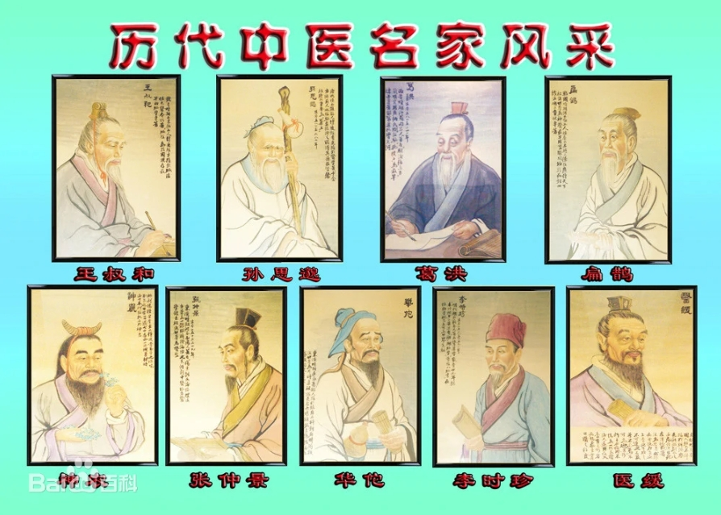

中医 (中华民族传统医学)
中医诞生于原始社会，春秋战国时期中医理论已基本形成，之后历代均有总结发展。除此之外对汉字文化圈国家影响深远，如日本医学、韩国韩医学、朝鲜高丽医学、越南东医学等都是以中医为基础发展起来的。
中医承载着中国古代人民同疾病作斗争的经验和理论知识，是在古代朴素的唯物论和自发的辩证法思想指导下，通过长期医疗实践逐步形成并发展成的医学理论体系。
中医学以阴阳五行作为理论基础，将人体看成是气、形、神的统一体，通过“望闻问切”四诊合参的方法，探求病因、病性、病位，分析病机及人体内五脏六腑、经络关节、气血津液的变化，判断邪正消长，进而得出病名，归纳出证型，以辨证论治原则，制定“汗、吐、下、和、温、清、补、消”等治法，使用中药、针灸、推拿、按摩、拔罐、气功、食疗等多种治疗手段，使人体达到阴阳调和而康复。
2018年10月1日，世界卫生组织首次将中医纳入其具有全球影响力的医学纲要。
医学名医
-

- 一、针灸之祖——黄帝，姓：姬，公孙、氏：有熊、轩辕。黄帝是华夏族领袖。现存《内经》即系托名黄帝与歧伯、雷公等讨论医学的著作。此书治疗方法多用针刺，故对针刺的记载和论述亦特别详细，对俞穴和刺阖、刺禁等记录较详。
- 二、脉学介导者——扁鹊，姓秦，名越人，战国渤海郡郑（今河北任丘）人。太子尸厥已死，而治之复生；齐桓公未病，而知其后五日不起，名闻三下。《史记·战国策》载有他的传记病案，并推崇为脉学的倡导者。
- 三、外科之祖——华佗（？—208），又名敷，字元化，后汉末沛国（今安徽亳州）人。精内、外、妇、儿、针灸各科，对外科尤为擅长。对“肠胃积聚”等病，饮麻沸散，须臾便如醉肠洗涤，缝腹摩膏，施行腹部手术。
- 四、医圣——张仲景，名机，汉末向阳郡（今河南南阳人）人。相传曾任长沙太守，当时伤寒流行，病死者很多。他的著作《伤寒杂病论》总结了汉代300多年的临床实践经验，对祖国医学的发展有重大贡献。
- 五、预防医学的介导者——葛洪，字稚川，自号抱朴子，晋朝丹阳句容（今属江苏人）。著有《肘后方》，书中最早记载一些传染病如天花、恙虫病症侯及诊治。“天行发斑疮”是全世界最早有关天花的记载。
常见药草
茅莓
姑娘果
车前
蛇舌草
鳢肠[lǐ cháng]